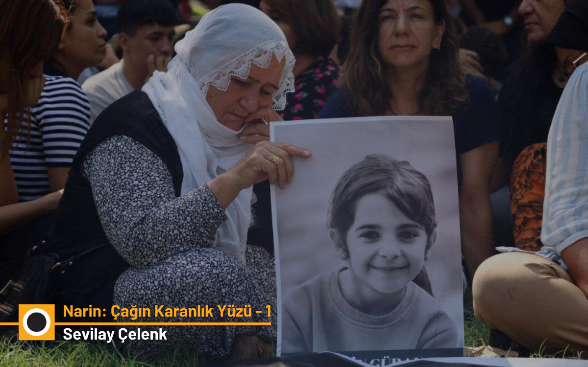

Narin: The Dark Face of an Era - 1
The Narin Trial as the First Year Draws to a Close

The Normalization of Evil
Almost a year has passed since Narin’s death. What happened to that beautiful child and to her family showed us the dark face of this era; how “evil becomes ordinary,” and how it absorbs everyone. With the developments surrounding it before and after, the Narin case struck us in the face with a harshness with which we may never have witnessed the normalization of evil in modern Turkey. An ominous event for which words fall short, born entirely of irresponsible conduct that never once recalled an ethic of responsibility toward the other. A great evil… Moreover, this irresponsibility was inverted in a way never seen before and clothed itself in the appearance of “standing up for a missing little girl.”
If you look at a social media post made just yesterday, the family were murderers because “there was blood pouring like out of a glass” on the rocks near Narin’s house. That is the exact wording! And no one would say: this child, who was killed by having her mouth and nose covered to cut off her air — apart from the fact that she herself remained a still-bleeding wound — which part of her was bleeding such that blood would spread all the way to the rocks? Nonsensical claims and lies kept being repeated.
Those who proclaimed these lies nonstop on social media under the guise of some supposed journalistic activity were being exalted as “He was like a father to Narin!” No one was saying that Narin already had a father. A father who said “I would give my life for my daughter”… Are they being a father to Narin by slowly killing Narin’s innocent mother, her brother, and her uncle in solitary cells hundreds of kilometers away from their home? Apart from killing Narin a thousand more times and shredding her memory into pieces, what else have these people — who supposedly seek justice for Narin — achieved for Narin?
With mind-numbing irresponsibility the lies continued, and continue still. What happened to the Güran Family and to Tavşantepe Village is like an apocalyptic sign. As if the Dajjal (the Antichrist) has appeared… You know that “Dajjal” means “liar, deceiver, one who mixes up truth and falsehood, good and evil.” That is exactly it. I do not know where to begin…
These days I wanted to write something partly about developments in the Narin case and partly about Sırrı Süreyya Önder. But it was not possible. In a constant rush I could not find the time to write these pieces separately. But today I realized that in my mind these two subjects are in constant conversation and stitched to one another. The fact that Sırrı Süreyya Önder is so loved is, to a great extent, related to his openness to understanding other lives and stories — in other words, to his wisdom. He was truly one of those exceptional figures with the ability to pass through stories and form a deep and powerful bond with the truth. In the Narin case, that is precisely what happened. Sırrı Süreyya immediately distilled the truth I have been struggling and struggling to articulate, as soon as he read what I had written and the interview I had given. I am sure that he also quickly grasped how this incident was related to the near-total collapse of the media and judicial order, and the fact that many legal professionals could not escape that collapse, and thus its political character. I will try to explain these in the following sections. But I am afraid this will be a long piece. For that reason I am dividing the article for you into five sections following this introduction. We will publish one section each day.
New developments
A lot has happened over time. First of all, the well-known digital forensics expert Tuncay Beşikçi analyzed and reported on the internet traffic image logs of Yüksel, Enes, and Salim Güran for the day Narin was killed. Beşikçi also examined the “narrowed base station record” study that formed the basis of the reasoned judgment and of the aggravated life sentences issued for the family members. Thanks to him we fully understood that this retrospective so-called narrowed base station record is the sort of entirely invalid work that would not be taken seriously anywhere in the world.
Internet Traffic and Proof of Innocence
In fact, the internet traffic information and image logs for the three family members sentenced to aggravated life in prison — for the relevant day and time — were already present in and accessible to the case. Yet despite the persistent insistence of the family’s lawyers at the sentencing hearing, this information was not taken into account, and judgment was announced without waiting for the content of that internet traffic to be examined.
With Tuncay Beşikçi’s report we understood that these logs contained data that entirely revealed the innocence of the family members. During the critical hours of the incident they were doing exactly what they had said in their statements. Salim was in his own home, Enes and the mother were in their own home. Essentially this information was already established by witness testimony. They had not even managed to force six-year-old Eren to say otherwise. But no one wanted to consider this simple fact.
The Troll Army Replacing Sensationalism
In the time since judgment was handed down in the Narin case, one segment that had shown intense interest in the case has left the stage and become entirely indifferent to the construction of justice. The stage has been left to certain grotesque entities that have made a name and profit out of sensational criminal cases, and to social media influencers and a troll army. They wanted the Güran Family to be destroyed. Strangely, by now it no longer even mattered to them whether the family was actually guilty. There were even those who said, “If they couldn’t protect a little girl, then they already deserve this punishment!” They could not bring themselves to say, “May God spare every child from encountering evil”…
Everything was extremely strange. For example, the lawyer defending Nevzat Bahtiyar behaved just like a troll and considered any amount of confusion he could sow as a gain. He was exhibiting the same sort of grave defense practice we saw a few years ago in Ankara from the lawyer who defended the murderer of the young academic staff member Ceren Damar. Without realizing that he himself was throwing the reasoned judgment — the very basis for the ruling — into the trash, he was putting forth new claims destined for the trash. For example, he was saying that Narin was not killed because she came home and witnessed something, but — to paraphrase — because she witnessed something or something happened to her before she went to the course. On another day he was trying to place cousins who, as established in the trial process, were not even in the village that day at the scene of the incident. He was viciously and in a manner constituting criminal accusation targeting the desperate mother in prison and Enes. In short, a merciless and relentless slander and defamation campaign with no basis whatsoever had been given the name “Justice for Narin.”
The UKB Report and the “Shadow” Claim
One of the two fundamental studies forming the basis of the reasoned judgment was darbaz; the other was the National Criminal Bureau’s (UKB) image enhancement and reporting work. This study claimed that Narin supposedly walked up the slope along the footpath and identified her as a shadow in front of the family’s barn. Yet according to the reasoned judgment, the same footpath allegedly had two other people going up and down it within a minute or two — and the UKB report could not see them at all. Supposedly Uncle Salim, who walked the same path right after Nevzat_Bahtiyar to take back from him the blanket in which the child’s body was being carried to the Gürans’ house, could not be identified in the report. Therefore, to the already deeply problematic assessment — which the family’s lawyers had explained with great clarity — the digital forensics expert Tuncay Beşikçi also drew attention in detail.
Beşikçi laid out in full the absurdity of considering a shadow as evidence in a criminal trial. It was also understood that the point identified as where Narin and “the movement” were visible was a rocky and brushy area. It was clearly explained that the shadow labeled as Narin could not possibly be Narin, because even an hour after the incident the same shadow was still standing in the exact same spot. After these pieces of evidence were submitted to the appellate court, not a single minute more should have been spent in prison by the family members, including Salim Güran. Because at those minutes Salim Güran was, almost uninterruptedly, browsing the internet and making use of the internet in a way that could not be characterized as just background activity. The court’s own reasoned judgment was already telling us that the same phone was not with someone else but on his person. No reasonable person could claim that he was participating in a murder at the same time he was actively browsing the internet.
The Appellate Process and the Presiding Judge’s Dissenting Opinion
Alongside all of this, in the appellate process the presiding judge also attached a lengthy dissenting opinion to the reasoned judgment. The appellate petitions were examined at the Diyarbakır 8th High Criminal Court and forwarded to the Diyarbakır Regional Court of Appeal 1st Criminal Chamber for review. The Chamber reviewing the file and the submissions upheld, by majority vote, on May 26, the prison sentences given to the four defendants. The Presiding Judge, however, attached a dissent and laid out his reasoning at length. In the dissent the presiding judge stated that the footage in the file, the base station records, and the DNA findings had been inadequately and insufficiently examined, and in particular that there was a need to clarify Nevzat Bahtiyar’s movements through detailed image analysis.
He stated that it was neither reasonable nor consistent with the ordinary flow of life that mother Yüksel Güran, her son Enes Güran, and Uncle Salim Güran killed Narin within minutes, acting as co-perpetrators, immediately after Narin supposedly came home. The dissent also stated that critical evidence such as PSA and hair samples had not been scientifically examined in a sufficient manner and that, due to all of these deficiencies, the judgment should be overturned.
The India Report and New Findings
Another development after this date was the report prepared by Brilliant Forensic Investigation (BFI), an India-based digital forensics firm, which determined that Narin did not make it past Nevzat Bahtiyar’s house and that she was abducted near that house. Narin never reached her own home. India’s global reputation and success in information technologies is well known. The report also stated that the previous reports prepared by UKB and the German expert were flawed. This BFI report was appended by Salim Güran’s lawyer, Onur Akdağ, to the petition for review and submitted to the Court of Cassation.
The Collapse of the Court’s Judgment
All of these developments should have nullified the consequences of the already deeply problematic court ruling for Yüksel, Enes, and Salim. Because at present there is not a single — not even one — sound, undisputed, concrete piece of evidence that justifies these aggravated life sentences. On the contrary, there are many witnesses and much evidence submitted at the appellate stage that testify to the exact opposite. At the outset, the most concrete information available was that Nevzat Bahtiyar, for 19 days, misled Narin’s family and all law enforcement, accompanied them in the searches, supposedly consoled the family, and kept up this filthy act until he was caught.
Until days later a farm camera recording captured the red vehicle in which it was understood that the child’s lifeless body had been carried, he did not say a single word. When it was determined that the red vehicle was being driven by Nevzat, Nevzat was not at his own home in Tavşantepe, he was at his son’s home in Çarıklı; and until that place was raided, he had not surfaced. On the day Narin’s lifeless body was found, he was forced to confess, as a matter of necessity, that he had placed the child’s body, with her sandal still on her foot and her bag still around her neck, into a sack and transported it by car to Eğertutmaz Creek.
In his first statement he said that he then placed the child’s body there, still in the sack, into a pit by the creek bank, and that he put a big stone on top, and that there were two stones on either side — in other words, that he hid the child’s body beneath three stones. Nevzat Bahtiyar later changed this chilling statement in two respects: At the sentencing hearing, while saying that he had supposedly carried Narin from her father’s house in his arms as he left the house (he paused noticeably at the unexpected question “Where was the sandal then”), he said that Salim handed him the sandal, having taken it from the entrance door. He claimed he concealed the child behind himself, and he reduced the number of stones, now saying there was a single stone, in order to strengthen the claim that later Salim went to Eğertutmaz Creek and placed the other two stones. Yet in this video you can still watch his first statement where he speaks of three stones.
In short, as a result of an utterly bizarre trial process unlike anything else in the world, three grieving family members — who, according to Nevzat Bahtiyar’s own statement, for whom there is not one single concrete piece of evidence, and where the only person proven to have touched, carried, and buried the child’s body is Nevzat — were sentenced to aggravated life in prison. If the Court of Cassation accepts the judgment in this way, Nevzat Bahtiyar will, in not much more than a month or two, be walking among us having completed his sentence…
DNA and the Sandal Inconsistency
If we recall that there were findings of abuse on the child’s body, then those who want the family members to rot in prison and who resist any healthy, concrete, and reliable information whatsoever must once again consider whose side they are on. Without bothering to read or examine a single explanation, a single report, those who accuse the family with the zeal of fanatical supporters write under every article, post, and message asserting the family’s innocence: “But the DNA in the car, but the hair in Narin’s palm.” There are those who romanticize the murder by saying, “Narin hid her killer in her palm.”
In the end I do not think this will change that hateful and irresponsible attitude, but I would like to explain once more: Nothing could be more natural than the child’s DNA being in the uncle’s car. Narin’s family themselves had already said that their daughter had been in that car in the recent past. The claim that this DNA came from some kind of vomit or postmortem fluid could not, in any way, be confirmed in the court proceedings. The fact that the DNA was in more than one spot in the car corresponded to the assertion that Narin had been in the car when alive and moving around.
Above all, in the sentencing hearing where the family members were given aggravated life sentences, Nevzat Bahtiyar said in his latest statement that he transported Narin in his own vehicle. Everyone who believes that final statement by Nevzat must also accept that the child’s body never touched Salim’s car after death, and that this DNA was something the child left in the vehicle while she was alive. If Nevzat is lying again, then that means adding this statement to the many false statements as to how and where Salim supposedly handed the child to him. In that case it is as clear as day that a person who is telling so many lies without cause and misleading the court to have an entire family sentenced to aggravated life imprisonment is concealing his own crime, not someone else’s. Because in nearly a year no clue pointing to anything or anyone else has emerged. If there were even the slightest concrete evidence about the murder, after all that the family and the entire village have suffered for a year, it would not have been possible for it not to surface. Those who say, “If Nevzat had done it, surely someone in the village would have seen,” do not want to believe that in the seclusion of a pathway where there are no other houses nearby, harm could be done to a child within minutes without anyone seeing.
Yet we are talking about a child who weighed only 23 kilos… It feels more comfortable to believe that this harm was done to Narin in her own home and jointly by her own family members. They believe that this tiny, frail child somehow bruised her brother’s eye at that moment, caused abrasions on his body, bit his arm, and that the mother then ripped out his hair. When you say this is impossible, then they say that the bruise around Enes’s eye or the bite on his arm may have come from the mother or the uncle when they “caught him hurting the child”…
These are arguments that rely on nothing but a vicious imagination that is extremely difficult to contend with and that is not grounded in a single concrete piece of evidence. None of the legal professionals who contributed to the imposition of aggravated life sentences on three family members through the reasoned judgment has, unfortunately, been able to put forward a rational argument that transcends this malice, this disinformation, and this gossip-mongering.
As for the hair strand in the child’s palm, the 29 cm brown hair strand for which mitochondrial DNA testing determined that it “belongs to the maternal line” cannot, in terms of either color or length, belong to the mother or the brothers. The determination that it belongs to the maternal line also means that this hair could belong to Narin herself, which is a far more plausible possibility given both the length of the hair and the manner of the child’s death. Because as a little child being killed by strangulation struggles to escape the hand at her throat, her own hair could easily wind around that hand and get caught in her palm. Just as it is most likely that the hair on one’s own clothing belongs to oneself. Indeed, after the family’s lawyers, today a forensic medicine specialist also said he was of this opinion.
Absurd Claims and Village Gossip
When you explain all of this separately and draw attention to the baselessness of “He said this, she said that”-style village gossip, this time you get comments that truly make one want to scream, like: “So did this child kill herself, was it the overlock machinist passing through the village who killed her?” At this point I think psychoanalysts and social psychologists need to analyze the situation. An entire country seems almost hypnotized, with eyes and ears completely closed to the straightforward possibility that the killer might simply be the person who physically carried and buried Narin. As if the person who lied time and again throughout the judicial process and misled everyone were some kind of ghost… as if he could not possibly commit murder! “If Nevzat had committed this murder, the family would never have left him alive,” they say. That is their only argument. I will address separately how baseless this already very flimsy general rationale is, but essentially when Nevzat was apprehended the uncle was already under arrest. On the day Narin’s body was found, her mother, her father, her brother Enes, and her uncles — along with dozens of other people from the family and the village — were also taken into custody. So there was no such possibility of “not leaving him alive.” Beyond that, it cannot be asserted as certain knowledge that any given family would seek an extrajudicial solution in such a matter. There is no data whatsoever in terms of the Güran Family’s history in the village to support such a claim.
The most absurd part is that when those who accuse the family and defend Nevzat have all their claims refuted, they move on to sowing confusion by talking about the crowds, the people, the hustle and bustle on the footpath that Narin allegedly walked at the time of the incident, and by implying, overtly or covertly, that the entire village was involved. Nevzat’s own lawyer is among them. No one says: why do you not ask Nevzat, “Who were these people?” Because at those minutes he himself had already said that he was at least there to water eggplants. He also said that shortly thereafter he went to Arif’s house and that he carried the child’s body from there to the barn. As can be seen, the merciless lies being told are increasingly tossing aside even the pretense of consistency.
In short, people continue to believe that the Güran family had some as-yet-unrevealed purpose, motive, or motivation in the murder. Moreover, it is implicitly or explicitly argued that the entire village, from the youngest to the oldest, participated in this secret with a level of taciturnity that could not exist even in a dystopian work of science fiction. Yet as Bernard Williams says in his book Truth and Truthfulness, “everyone poking their noses into each other’s business is a tiresome feature of villagers. In fact, in small traditional communities, people typically lie all the time precisely because it is so hard to keep anything secret.” (p.152).
It is impossible to understand the refusal to accept the childish lies or confusion spoken in a small village a few hours after the incident, when it was not yet known what horrific thing had happened to Narin and when it was probably assumed she would pop out from somewhere and come back. The simple reality of a village atmosphere is being rejected. In this process — which has already traumatized the next generations of the village and frankly ruined all of their reputations — people believe in the existence of a secret that has not been revealed for a year. Because they want to believe. Because they believed once… and now insisting on it is easier than saying “We were wrong.”
The Spread of Evil
This is what I mean by the dark face of this era… This is what I mean by the normalization of evil and its absorption of everyone. After Narin, the fact that her dearest ones — her innocent mother, her 18-year-old brother — are being slowly killed, under severe isolation in a cell, is something that many people find, unbelievably, not disturbing at all. The fire of the police-thriller excitement sparked by the incident has burned out. Who cares about Tavşantepe Village, about a peasant family there? The journalists, the TV people, the rights defenders, the jurists — all back in their homes, busy with their own work…
So what is the family doing, what state are they in at the end of this apocalyptic year? I was thinking about this too, on the plane I boarded about a week ago to fly to Erzincan to visit mother Yüksel and her son Enes, which took off from Ankara at 00:05 just past midnight. I will tell that tomorrow.